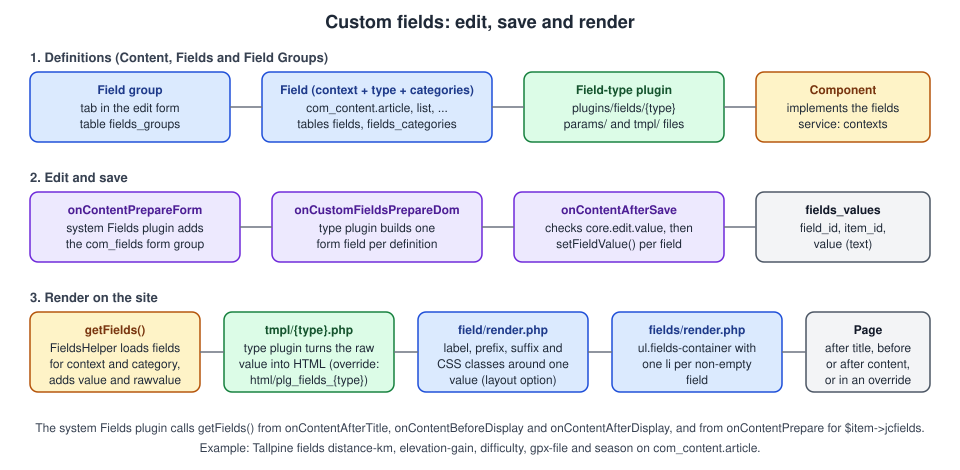

Joomla Custom Fields
|
This content was generated with the assistance of AI and should be verified against the official documentation before being relied on in production. |
Custom fields let a site builder add structured data to Joomla content without writing a component: a distance in kilometres on a trail report, a phone number on a user, a GPX file on a contact. This page was checked on 2026-10-30 against Joomla 6.2.x and PHP 8.3 or later. It covers the screens an editor and a site builder use, the plugin and helper classes that make them work, how a value travels from the edit form to the database and back to the page, and how a themer or developer changes the output.
The people involved are different at each step. A site builder creates field groups and fields and chooses where each
one appears. An editor or author fills the fields in while editing an article, a contact or a user profile. A
themer controls the markup through layout and plugin overrides in a template such as cassiopeia_tallpine. A
developer makes a component such as com_tallpine field-aware and, when the built-in types are not enough, writes a new
field-type plugin. The running example is the Tallpine Hiking Club trail report, which carries the fields
distance-km, elevation-gain, difficulty, gpx-file and season.
Core custom fields are an old feature (Joomla 3.7), but they have kept changing. Joomla 6.0 added the Note and Number field types, and Joomla 6.1 added Audio, Video and Document variants of the Media field. The version sections below say which behaviour belongs to which release.
How custom fields are built
Custom fields are not part of the articles component. They are a separate component, com_fields, which stores the
definitions, plus a family of plugins that supply the field types, plus one system plugin that wires the component into
the host forms and pages.
| Part | Role |
|---|---|
|
Administrator screens Content → Fields and Content → Field Groups, the |
Plugin group |
One plugin per field type: |
System plugin System - Fields |
Adds the |
Content plugin Content - Fields |
Replaces the tags |
Editors-xtd plugin Button - Fields |
An editor button that inserts those tags. |
The host component |
Declares that it supports fields and says which contexts it offers. Articles, contacts, users and categories do this
in core; |
The sequence is the same for every field type and is drawn in the figure below. The definition decides which fields a form gets, the type plugin builds the form field and renders the value, and the layouts wrap the result.

The figure shows the three lanes: definitions, edit and save, and rendering. Everything a themer can override sits in the third lane.
Contexts
Every field belongs to exactly one context, written component.section. The context decides which edit form gets the
field and which content item supplies the values. Core provides these contexts:
| Context | Component | Where the field appears |
|---|---|---|
|
Articles |
The article edit form in the administrator and the front-end edit form, and the article, category blog and list views. |
|
Articles |
The category edit form for article categories. Category fields can be shown on category views. |
|
Contacts |
The contact edit form and the contact view. |
|
Contacts |
The contact form that visitors fill in on the site. |
|
Contacts |
The category edit form for contact categories. |
|
Users |
The user edit form in the administrator, the registration form and the profile edit form on the site. |
On the site, the same context is reached from several URLs. The component maps those sections for you: in
com_content, the front-end sections form, featured and category all resolve to article; in com_users, the
sections registration and profile resolve to user; and com_contact maps the contact form to mail and the other
front-end sections to contact. A component that does not implement the fields service simply has no contexts, which is
why fields never appear in, say, banner or news feed forms.
The Options of Articles and Contacts also contain Enable Custom Fields (the custom_fields_enable parameter,
default Yes). Switching it off hides the feature for that component without deleting any data.
Which context a field is created for is fixed when it is created, by the context filter at the top of the Fields screen: the Fields list is always filtered by one context, and New creates a field for the selected one. A field cannot be moved to another context afterwards, so create the field again if you picked the wrong context. Field groups follow the same rule.
Contexts of third-party components
Contexts are open. Any component whose extension class implements FieldsServiceInterface (or
FieldsFormServiceInterface) appears in the context drop-down of the Fields screen. The section on
making a component field-aware shows the code. Tags are a special case: the context
for items shown in a tag view is taken from the item’s own type alias, so a trail tagged family-friendly renders the
same fields in a tag list as in its own list.
Field groups
A field group collects fields under a heading and a tab. Open Content → Field Groups, choose the context and select New. A group has a title, a description (shown as inline help under the group when Toggle Inline Help is on), a status (published, unpublished, archived or trashed), an access level, a language and a note. The Options tab holds Display When Read-Only, which fields inherit by default. The Permissions tab has its own ACL (see permissions and access levels).
A field assigned to a group appears in a tab named after the group on the edit form. Fields without a group are put in a general Fields tab. Groups appear in the order shown in the Field Groups list, which you change by dragging the rows, and fields are ordered inside the group by the order of the Fields list. For the Tallpine site:
-
group Trail data with the fields
distance-km,elevation-gain,difficulty -
group Season and files with
seasonandgpx-file
Groups also work in the output: the tag {fieldgroup 3} in an article prints every field of group 3, and the system
plugin’s output groups follow the same field order.
Creating a field
Open Content → Fields, select the context and choose New. The edit form has four tabs.
General tab
| Setting | Meaning |
|---|---|
Type |
One of the installed and enabled field-type plugins. The type cannot be changed after the field is saved, because the type decides the shape of the stored value. Create a new field and migrate the data instead. |
Title, Name and Label |
The Title is shown in the administrator list. The Name is the code identifier: it is used in |
Description |
Tooltip text for the editor. It is not translatable and is not shown on the front end. |
Required |
The field must have a value before the item can be saved. |
Only Use In Subform |
Marks the field as a building block for a Subform field. Such fields are left out of the normal form and output. |
Default Value |
The initial value in a new item. When an existing item has no stored value the default is used for display as well. |
Filter and Maximum Length |
Appear on text-like types. The filter validates and cleans the input. |
Status |
Published, Unpublished, Archived or Trashed. Only published fields are loaded on the edit form and in the output. Trashed fields remain in the database until emptied. |
Field Group |
None or one of the groups of the same context. |
Category |
The article or contact categories in which the field appears. All means every category, and picking categories limits the field to them and their subcategories. |
Access |
The viewing access level that can see the field. |
Language |
The language of the field, |
Note |
A private note for administrators. |
The category assignment is evaluated when the form loads. When an author changes the category of a new article the form
reloads and shows the fields of the new category, which is why a page that "loses" typed text on a category change is
behaving as designed. A field with no assigned category appears for every category. The Tallpine site assigns
distance-km, elevation-gain and gpx-file to the category Trails, so they show for Trails → Alpine and Trails
→ Valley and are hidden for News.
Options tab
The Options tab is split into three panels. The settings are stored in the params column of the field.
Form Options
-
Placeholder (hint text in the backend form, never shown on the front end), Field Class and Label Class (Form) (CSS classes for the input and its label)
-
Editable In: Site, Administrator or Both. A field restricted to the administrator is not shown on the front-end edit form, which suits an internal field such as an editorial rating.
-
Showon Attribute: conditional display based on another field of the same form. The syntax is the one of any Joomla form:
name:valueshows the field when another field has that value,name!:valuewhen it does not,[OR]and[AND]combine conditions, andname!:means "has any value". For fields in a subform use the field ID where the name would be.
Display Options
-
Display Class, Value Class, Label (show or hide) and Label Class (Output): CSS classes for the container, the value and the label of the rendered field
-
Automatic Display: where the system plugin inserts the field: After Title, Before Display Content, After Display Content or Do not automatically display. The default is before the content.
-
Prefix and Suffix: fixed text around the value, for example the unit
km -
Layout: an alternative layout file from the component or from a template (see choosing a layout per field)
-
Display When Read-Only: Inherit, Yes or No; whether a user without the Edit Value permission still sees the field, read-only, in the form
Smart Search
-
Search Index: whether the field value is indexed by Smart Search. The values are Don’t index, Make searchable, Add as taxonomy or Both. Indexing uses the permissions of the item, so a value indexed as searchable can reach visitors who cannot see the field itself. Check the field’s access level before turning it on. See Smart Search.
Field types
Each type is a plugin of the fields group in plugins/fields. A plugin can be disabled in System → Plugins to
remove a type from the list; existing fields of that type then stop rendering.
| Type | Stored value | Notes and options |
|---|---|---|
Text |
One string |
Single-line text. Options: Filter (for example raw, safe HTML, text, alphanumeric, integer, float or telephone) and
Maximum Length. The output is encoded with |
Textarea |
One string |
Multi-line text with Rows, Columns, Maximum Length and a filter. |
Editor |
HTML |
Opens the user’s default editor. Options: Buttons (editor buttons on or off), Hide (buttons to leave out), Width, Height and Filter, which should stay on the text filter of the user’s group so that the Text Filters configuration applies. |
Integer |
A whole number, or several |
A drop-down generated from First, Last and Step, with Multiple. An integer always has a value, so it always renders. The User Guide suggests a plugin override or an out-of-range value to hide it. |
Number (6.0) |
A decimal number |
An input with up and down arrows and Minimum, Maximum and Step Increment (decimal steps such as 0.01 are accepted). Format as Currency adds a Currency Symbol, a Symbol Position (before or after) and the number of decimals. The output formats the number with the language’s thousands and decimal separators. |
List |
A value or several values |
A select list with a name/value pair per option, with Multiple and a Form Layout of basic or fancy select. The
output shows the option text, translated with |
Radio and Checkboxes |
One value, or several |
The same option list in the form of radio buttons or checkboxes. Only the ticked options are printed. |
Calendar |
A date string |
Date picker with the Show Time option. |
Color |
A hex colour |
Colour chooser; the value is printed as hex text unless an override draws a swatch. |
Url |
A URL |
Options: Schemes (allowed protocols), Relative and Show Url. The output is an anchor. External links get
|
Media |
An image, or an object with the file and an alt text |
Chooses a file with the Media Manager. See the next section for the 6.1 variants. |
List of Images ( |
File name |
A list of the files of one folder, with Directory, Multiple and Image class. |
SQL |
One value, or several |
A list filled by a query, with Query, Header and Multiple. The query must return |
Subform |
A JSON list of rows |
A repeatable group of other fields. See the subform section. |
User |
A user ID, or several |
A user selection modal. The output prints the user’s name. |
Usergrouplist |
A group ID, or several |
A drop-down of the user groups, with Multiple. The output prints the group titles. |
Note (6.0) |
Nothing stored |
A display-only block. See the Note section. |
The User Guide documents these types on separate pages, linked from the references. The source of each type lives in
plugins/fields/{type} in the source tree.
The Number field and the Integer field
Number and Integer differ in storage and in input. Integer offers a list of whole numbers generated from a first
value, a last value and a step, and the selected value is stored as a number; because a select list always has a
selection, an Integer field always renders. Number is a real number input that accepts decimals, can be left empty and
can show currency formatting. For the Tallpine trail, distance-km is a Number field
with step 0.1 and the suffix km, whereas elevation-gain is an Integer field with First 0, Last 3000 and Step
50.
Older books such as Joomla! 4 Masterclass (2023) describe the field types of Joomla 4 and have no Number or Note type; they suggest a Text or Integer field with a filter for decimal data. Since Joomla 6.0, use Number.
The Note field
Note (added in 6.0) is a layout element rather than a data field. It stores nothing: it prints a heading and a text into the edit form and, when Display in Frontend is on, into the output. Use it to put instructions between fields, for example a hint above the trail data: "Enter the distance as measured by the GPX track". The settings are:
-
Note Heading and Note Content (the content is an editor field, filtered by the text filter)
-
Note Class, which is
alert alert-infoby default, producing a Bootstrap alert box -
Heading Tag, from
h1toh6(defaulth4) -
Show Close Button, which accepts
truefor an alert or another dismiss value -
Display in Frontend, off by default
-
Automatic Display and Layout as for the other types
Because a Note holds no data, there is no default value to set. Several Notes can be used to give a long form some structure; they are ordered like any other field.
Media fields and the 6.1 media types
The Media field stores a reference to a file chosen in the Media Manager. Up to Joomla 6.0 it was an image picker, and
the edit form offered the options Directory, Preview and Image class. The output was an img element built with
the layout joomla.html.image; the stored value is a JSON object that carries the image file and its alt text, and
older plain-string values are converted on the fly.
Joomla 6.1 extended the plugin with three more types, announced as the "Three New Media Custom Field Options: Audio,
Video & Documents". When you create a field, the type list now contains Media, Audio, Document and Video, which
are the layouts media, media_audio, media_document and media_video of the same plugin. Each type restricts the
Media Manager modal to files of the matching kind, taken from the Media Manager options for image, audio, video and
document extensions.
| Type | Output and options |
|---|---|
Media (images) |
|
Audio |
An |
Document |
A download link whose text is entered by the author per item; the default is "Download {filename}" and the
placeholder |
Video |
A |
Two practical consequences follow. First, the files a field can choose from are exactly the extensions allowed in the
Media Manager options (image_extensions, audio_extensions, video_extensions and doc_extensions), and an upload
is rejected when the extension is not in restrict_uploads_extensions or the MIME type is not in upload_mime (while
Check MIME is on). The Tallpine gpx-file field is a Document field, and a GPX track is not in the default list,
so the club’s administrator adds gpx as a document extension and application/gpx+xml as an allowed MIME type before
authors can attach tracks. Second, the files come from the Media Manager, so the access of an author to upload follows
the Media Manager’s Create permission: an author without it can choose existing files but cannot upload.
Because the 6.1 types are layouts of the plugin, a site that upgrades from 6.0 keeps its existing image fields unchanged. The 6.1 series also fixed the behaviour of the form when the type of a Media field is switched and the form reloads. See Media Manager for the options.
Subform fields
A Subform field groups other fields into a repeatable list. Create the member fields first, set Only Use In Subform
to Yes on each, and then add the Subform field: select Repeat (more than one row), an optional Maximum Rows, and
add the member fields one by one, with Render Values deciding whether the member is printed. The form layout can be
the default, a repeatable form, a grid or a table (the Form Layout setting on the Subform field). Rows are stored as
JSON in the single value of the Subform field and are printed as ul.fields-container with one li per row.
Two pitfalls are documented by the User Guide and the changelog. A Calendar field inside a subform can raise a fatal
error when the article is saved a second time unless Show Time is set to Yes for it. And duplicate subform fields are
removed on save, with a warning in the 5.4 and later series. The Tallpine site uses a subform called waypoints, with a
Text field waypoint-name and a Number field waypoint-altitude, to list the passes of a multi-day route.
Permissions and access levels
Three mechanisms control who sees and changes a field.
-
Access level of the field and of the group controls who can see the rendered value and the field in the form.
-
Permissions of the field and the group are ordinary Joomla ACL: Create, Delete, Edit and Edit State manage the definition, and Edit Value (
core.edit.value) controls whether a user may change the field’s value in an item. Permissions can be set globally in the options of the Fields component, per context, per group and per field. The assets are named by component, for examplecom_content.field.12for the field with ID 12 andcom_content.fieldgroup.3for the group with ID 3. See Users, groups, access levels and ACL. -
Editable In selects the application (site, administrator or both) in which the form shows the field.
A user without Edit Value never overwrites a value: the field is either hidden or shown as read-only, depending on the
Display When Read-Only setting of the field, which by default is inherited from its group (whose default is Yes).
When values are saved, the system plugin skips fields the user cannot edit, so a crafted request cannot change them
either. For the Tallpine club, the field warden-notes (a Textarea in the Trail Warden group) gives Edit Value only
to the custom group Trail Warden with the access level used for member-only trail conditions, so editors see
nothing and the wardens can write.
The access level and the permission are two separate controls. A field with access level Registered is still editable by an Author with Edit Value in the administrator, even though visitors cannot see it. Test both as a Registered member, an Author and a Trail Warden before launching.
The Tallpine trail fields
The club’s trail report is an article in the category Trails. The fields below are defined for the context
com_content.article:
| Name | Type | Group | Settings |
|---|---|---|---|
|
Number |
Trail data |
Required; minimum 0, maximum 200, step 0.1; suffix |
|
Integer |
Trail data |
First 0, last 3000, step 50; suffix |
|
List |
Trail data |
Options |
|
Checkboxes |
Season and files |
Options |
|
Document (6.1) |
Season and files |
Directory |
|
Textarea |
Season and files |
Access: Trail Warden; Permission Edit Value: Trail Warden only. |
All of them are assigned to the category Trails (and so to Alpine and Valley). Setting Automatic Display to "Do not automatically display" for the number fields means that they appear only where an override places them, which the following sections do.
The definitions can also be listed and managed through the Web Services API, described in Web Services API.
# List the custom fields of the article context (token comes from the environment)
curl -s \
-H "Accept: application/vnd.api+json" \
-H "Authorization: Bearer ${TALLPINE_API_TOKEN}" \
"http://localhost:8080/api/index.php/v1/fields/content/articles"How a value is saved and read
Saving
The system plugin listens to onContentPrepareForm. For a supported form it calls FieldsHelper::prepareForm(), which
loads the fields of the context and of the item’s category and fires onCustomFieldsPrepareDom once per field. The type
plugin returns a DOM node that becomes a normal Joomla form field in the form group com_fields. The media plugin, for
instance, changes the type of the node to accessiblemedia and disables the field for a user who may not upload.
When the item is saved, the plugin handles onContentAfterSave:
-
The values under
com_fieldsin the submitted data are matched with the fields of the context. -
A field that is not on the form (hidden, or restricted by Editable In) keeps its stored value.
-
Empty values are removed, and complex values (arrays of arrays, or arrays with non-numeric keys) are encoded as JSON.
-
FieldModel::setFieldValue()checks the Edit Value permission and writes the rows to#__fields_values. A multi-value field such as Checkboxes stores one row per value.
For a user, the same flow is run from onUserAfterSave, with the exception of the tasks activate, block and
unblock, because those would otherwise wipe the stored data. When the item is deleted, onContentAfterDelete removes
its values.
Reading
FieldsHelper::getFields($context, $item, $prepareValue) is the central API. It reads the published fields of the
context, filters them by the category of the item and, on a multilingual site, by the item’s language, and returns
copies of the field objects with these properties:
| Property | Content |
|---|---|
|
The definition. |
|
Registry objects with the common options and the type-specific options. |
|
The value as stored, or the default value when nothing is stored. |
|
The prepared HTML when |
With $prepareValue, getFields() fires three events around the preparation: onCustomFieldsBeforePrepareField,
onCustomFieldsPrepareField (the type plugin renders) and onCustomFieldsAfterPrepareField. A plugin can change the
field before preparation or the HTML afterwards. Since Joomla 5.3 these events are concrete classes in
Joomla\CMS\Event\CustomFields and field plugins are SubscriberInterface subscribers; code that still reads the
generic Event::getArgument() array, as shown in older books such as Developing Extensions for Joomla! 5 (2023), should
use getField(), getItem() and getContext() on the event objects.
The system plugin also handles onContentPrepare: it fills $item->jcfields, an array of prepared fields keyed by
field ID. The Web Services API uses the same helper and exposes every field as an attribute named after the field.
Output: Automatic Display
For each field the system plugin decides when to print it. The three content events are the hooks:
| Automatic Display setting | Event | Typical position in the layout |
|---|---|---|
After Title |
|
Directly below the heading, via |
Before Display Content |
|
Between the info block and the text, via |
After Display Content |
|
After the text, via |
Do not automatically display |
none |
The field is only printed where a layout, an override or a |
Fields set to the same position are collected by fields/render.php and printed together, in order, as a list:
ul.fields-container, one li.field-entry per non-empty field, each with the field’s name and render class. A field with
an empty value is skipped, which is why a "not required" field leaves no empty label behind.
The core field/render.php layout wraps one field: an optional span.field-label, the optional prefix, the value in a
span.field-value and the optional suffix. The classes configured under Display Options are added to these elements.
Placing a field with a tag
Inside an article text, two tags insert fields. The Content - Fields plugin replaces {field 12} by the field with
ID 12 and {fieldgroup 3} by every field of group 3. The tag can be followed by a layout name, for example
{field 12 trail-badge}. The editor button Fields inserts the tag from a list. Tags are a convenience for editors; a
template author who needs stable markup should rather use overrides, because IDs change between environments.
Overriding the layout
There are four places a themer can change the output, from coarse to fine. The examples assume the child template
cassiopeia_tallpine; see Child templates and
Template overrides and alternative layouts.
1. Place named fields in the article layout
Set Automatic Display to Do not automatically display, then print the fields where you want them in the view
override. The array $this->item->jcfields is keyed by field ID, so build a lookup by name first.
<?php
// templates/cassiopeia_tallpine/html/com_content/article/default.php (excerpt)
defined('_JEXEC') or die;
use Joomla\CMS\Language\Text;
use Joomla\CMS\Layout\LayoutHelper;
use Joomla\Component\Fields\Administrator\Helper\FieldsHelper;
$fields = [];
foreach ($this->item->jcfields as $field) {
$fields[$field->name] = $field;
}
$stat = function (string $name) use ($fields): string {
if (!isset($fields[$name]) || $fields[$name]->value === '') {
return '';
}
// value is already HTML prepared by the field type plugin
return FieldsHelper::render(
$fields[$name]->context,
'field.render',
['field' => $fields[$name]]
);
};
?>
<dl class="tallpine-trail-stats">
<dt><?php echo Text::_('TPL_TALLPINE_DISTANCE'); ?></dt>
<dd><?php echo $stat('distance-km'); ?></dd>
<dt><?php echo Text::_('TPL_TALLPINE_ELEVATION'); ?></dt>
<dd><?php echo $stat('elevation-gain'); ?></dd>
</dl>Two details matter. The value property is already prepared by the type plugin (plain-text types such as Text and List
are encoded, an Editor field is HTML), so print it without further escaping; the rawvalue property is the stored text and must be escaped by the override with htmlspecialchars() or a
safer helper. And jcfields only contains fields that passed the category, language and access checks, so test with
isset() instead of assuming every field exists. The User Guide example for contacts uses the same idea in
html/com_contact/contact/default.php, and the same code works for users and articles.
2. Change the wrapper: the field layouts
FieldsHelper::render() first looks for a layout with the requested name in the layout folders of the component of the
context, and falls back to the layout of com_fields. In a template the search order for field.render includes:
-
html/layouts/com_content/field/render.php(the component of the context) -
html/layouts/com_fields/field/render.php -
html/layouts/field/render.php
The Tallpine template replaces the wrapper for every field, to print the label as a dt style heading and the value in
a badge, by adding a file to the child template.
<?php
// templates/cassiopeia_tallpine/html/layouts/com_fields/field/render.php
defined('_JEXEC') or die;
use Joomla\CMS\Language\Text;
if (!isset($displayData['field'])) {
return;
}
$field = $displayData['field'];
$value = $field->value;
if ($value === '' || $value === null) {
return;
}
$label = Text::_($field->label);
$prefix = $field->params->get('prefix') ? Text::plural($field->params->get('prefix'), $value) : '';
$suffix = $field->params->get('suffix') ? Text::plural($field->params->get('suffix'), $value) : '';
?>
<?php if ((int) $field->params->get('showlabel') === 1) : ?>
<span class="tallpine-field-label"><?php echo htmlspecialchars($label, ENT_QUOTES, 'UTF-8'); ?></span>
<?php endif; ?>
<span class="tallpine-field-value <?php echo htmlspecialchars((string) $field->params->get('value_render_class'), ENT_QUOTES, 'UTF-8'); ?>">
<?php echo $prefix ? htmlspecialchars($prefix, ENT_QUOTES, 'UTF-8') . ' ' : ''; ?>
<?php echo $value; ?>
<?php echo $suffix ? ' ' . htmlspecialchars($suffix, ENT_QUOTES, 'UTF-8') : ''; ?>
</span>The list wrapper is fields/render.php in the same folders. Overriding it changes the ul.fields-container markup for
all the fields of a position, for example to print them as a Bootstrap definition list.
Choosing a layout per field
The Layout option on the Options tab lists the layouts that exist in the component’s layouts/field folder and in
html/layouts/{component}/field, html/layouts/com_fields/field and html/layouts/field of every enabled site
template. Files named render.php and files starting with an underscore are not offered. When you pick a layout, the
list wrapper calls field.{layout} instead of field.render for that field only. The Tallpine difficulty field uses
a layout trail-badge:
<?php
// templates/cassiopeia_tallpine/html/layouts/com_fields/field/trail-badge.php
defined('_JEXEC') or die;
$field = $displayData['field'];
if ($field->rawvalue === '' || $field->rawvalue === null) {
return;
}
// rawvalue holds the list option value: easy, moderate, hard or alpine
$level = preg_replace('/[^a-z]/', '', strtolower((string) $field->rawvalue));
?>
<span class="badge bg-secondary trail-badge trail-badge--<?php echo $level; ?>"><?php echo $field->value; ?></span>The raw value is reduced to lower-case letters before it becomes part of a class name, so a changed option list cannot inject markup.
3. Change how a type prints: plugin overrides (link templates)
The tmpl/{type}.php file of a field plugin can be overridden like a module or a view, in
html/plg_fields_{type}/{type}.php. Use this when every field of one type should print differently, for example every
Url field. The core Url type prints the generic text "Visit website" for external links. The Tallpine site wants a
labelled link with an icon and a visually hidden warning that the link opens a new window:
<?php
// templates/cassiopeia_tallpine/html/plg_fields_url/url.php
defined('_JEXEC') or die;
use Joomla\CMS\Language\Text;
use Joomla\CMS\Uri\Uri;
$value = $field->value;
if ($value === '') {
return;
}
$external = !Uri::isInternal($value);
$attrs = $external ? ' rel="nofollow noopener noreferrer" target="_blank"' : '';
$text = $fieldParams->get('show_url', 0) ? htmlspecialchars($value) : Text::_('TPL_TALLPINE_OPEN_TRAIL_MAP');
?>
<a class="tallpine-link" href="<?php echo htmlspecialchars($value); ?>"<?php echo $attrs; ?>>
<?php echo $text; ?>
<?php if ($external) : ?>
<span class="visually-hidden"><?php echo Text::_('TPL_TALLPINE_OPENS_NEW_WINDOW'); ?></span>
<?php endif; ?>
</a>The plugin file receives the variables $field, $fieldParams (the plugin parameters merged with the field’s own
parameters, where the field wins) and $context. The same technique draws a colour swatch for a Color field, which the
User Guide describes, or an audio element with a download link for the Audio type. Prefer an override of the plugin
file to editing the plugin, which an update replaces.
4. Change the form
The form layout of some types is selectable in the field options (Form Layout on List, SQL, Radio, Integer and
Subform), for example a fancy select with search for a long list. The input markup of other types comes from the
standard form field layouts under layouts/joomla/form/field, which a template can override in
html/layouts/joomla/form/field. See Forms and form fields.
Making a component field-aware
Custom fields come for free in the core components. A component such as com_tallpine has to opt in. The work has four
parts.
-
The service. The component’s extension class implements
FieldsFormServiceInterface(or onlyFieldsServiceInterface) and returns the contexts and the section mapping. -
The form. The edit form needs the category field
catidand the language field, because the system plugin uses the item’scatidto decide which fields to show. The model must use the form namecom_tallpine.trail. -
The events. Saving through
AdminModel::save()triggersonContentAfterSavewith the context of the model, so values are saved without extra code. The site views call the content plugins foronContentPrepare,onContentAfterTitle,onContentBeforeDisplayandonContentAfterDisplaywith the contextcom_tallpine.trail. -
The access rules.
access.xmlgetsfieldgroupandfieldsections so that the ACL assets of fields and groups can exist undercom_tallpine, ascom_contentdoes in its ownaccess.xml.
<?php
// com_tallpine/administrator/src/Extension/TallpineComponent.php
namespace Tallpine\Component\Tallpine\Administrator\Extension;
use Joomla\CMS\Categories\CategoryServiceInterface;
use Joomla\CMS\Categories\CategoryServiceTrait;
use Joomla\CMS\Extension\MVCComponent;
use Joomla\CMS\Factory;
use Joomla\CMS\Fields\FieldsFormServiceInterface;
use Joomla\CMS\Fields\FieldsServiceTrait;
use Joomla\CMS\Language\Text;
defined('_JEXEC') or die;
final class TallpineComponent extends MVCComponent implements CategoryServiceInterface, FieldsFormServiceInterface
{
use CategoryServiceTrait, FieldsServiceTrait {
CategoryServiceTrait::prepareForm insteadof FieldsServiceTrait;
}
public function validateSection($section, $item = null)
{
if (Factory::getApplication()->isClient('site') && ($section === 'category' || $section === 'form')) {
// The list of trails and the front-end edit form use the trail context
$section = 'trail';
}
return $section === 'trail' ? $section : null;
}
public function getContexts(): array
{
Factory::getApplication()->getLanguage()->load('com_tallpine', JPATH_ADMINISTRATOR);
return [
'com_tallpine.trail' => Text::_('COM_TALLPINE_TRAILS'),
'com_tallpine.categories' => Text::_('JCATEGORY'),
];
}
}The Joomla Developer Manual has no dedicated custom-fields page, and the section on events does not list the
onCustomFields events. The reference for the integration is the source of com_content, com_contact and
com_users, together with the Manual’s page on categories, which com_tallpine also needs. See
Component MVC in the administrator,
Categories, custom fields and workflow
integration and ACL in extensions.
<!-- com_tallpine/administrator/access.xml (excerpt) -->
<access component="com_tallpine">
<section name="component">
<action name="core.admin" title="JACTION_ADMIN" />
<action name="core.manage" title="JACTION_MANAGE" />
<action name="core.create" title="JACTION_CREATE" />
<action name="core.edit" title="JACTION_EDIT" />
<action name="core.edit.state" title="JACTION_EDITSTATE" />
<action name="core.edit.value" title="JACTION_EDITVALUE" />
</section>
<section name="fieldgroup">
<action name="core.create" title="JACTION_CREATE" />
<action name="core.delete" title="JACTION_DELETE" />
<action name="core.edit" title="JACTION_EDIT" />
<action name="core.edit.state" title="JACTION_EDITSTATE" />
<action name="core.edit.value" title="JACTION_EDITVALUE" />
</section>
</access>A site view of a trail then prints its fields with the usual calls. The call to FieldsHelper::getFields() is only
needed when the template prints fields by hand; the plugins do the rest.
<?php
// com_tallpine/src/View/Trail/HtmlView.php (excerpt)
use Joomla\CMS\Event\Content\ContentPrepareEvent;
use Joomla\CMS\Plugin\PluginHelper;
use Joomla\Registry\Registry;
PluginHelper::importPlugin('content');
$item->text = $item->description;
$this->getDispatcher()->dispatch(
'onContentPrepare',
new ContentPrepareEvent(
'onContentPrepare',
['context' => 'com_tallpine.trail', 'subject' => $item, 'params' => new Registry($item->params ?? '{}'), 'page' => 0]
)
);
// $item->jcfields is now filled by the System - Fields pluginReading and writing values through the API
The Content web services plugin registers CRUD routes for the field definitions (v1/fields/content/articles and
v1/fields/content/categories) and for the groups (v1/fields/groups/content/articles and
v1/fields/groups/content/categories). For the values, an article in the API carries every field as a top-level
attribute named after the field, and a write moves those attributes into the com_fields array before saving. The
headless Tallpine trail map reads a trail like this:
GET /api/index.php/v1/content/articles/42 HTTP/1.1
Host: localhost:8080
Accept: application/vnd.api+json
Authorization: Bearer ${TALLPINE_API_TOKEN}{
"data": {
"type": "articles",
"id": "42",
"attributes": {
"title": "Lake Ridge circular",
"distance-km": "12.4",
"elevation-gain": "850",
"difficulty": "moderate"
}
}
}PATCH /api/index.php/v1/content/articles/42 HTTP/1.1
Host: localhost:8080
Content-Type: application/json
Authorization: Bearer ${TALLPINE_API_TOKEN}
{ "distance-km": "12.9", "difficulty": "hard" }The user behind the token must hold Edit Value for the fields, as in the administrator. Joomla 6.2 enables the API token plugin and disables the Basic Auth API plugin on a fresh installation, so use tokens.
Versioning
Joomla keeps a version history of articles and contacts when Enable Versions (save_history) is on in the component
options, with a Maximum Versions (history_limit) count. Joomla 6.0 replaced the old approach, in which the
Behaviour - Versionable plugin stored a snapshot after each table save, with a model-based concept: a model that
implements VersionableModelInterface and uses VersionableModelTrait writes a snapshot in AdminModel::save() through
saveHistory(). The snapshot is the item’s row merged with the submitted form data. The Versionable plugin is
deprecated in 6.0 for removal in 8.0.
Two points follow for custom fields. First, the values entered for an item are part of the form submitted with the
item, so a version snapshot of an article is taken from the same save that stores the values; verify on your own site
that restoring a version brings back the values you expect, because values are stored in #__fields_values rather than
in the item row. Second, the field and group definitions themselves are managed by FieldModel and GroupModel,
which do not implement the versioning interface in 6.2, so the field edit screen has no Versions button. Treat
definitions as configuration: export the database or keep a changelog before changing field options. The Web Services
API makes it possible to script a backup of the definitions with the routes shown above.
Multilingual sites
A field and a group each have a language. A field with language All appears for every item. On a multilingual site, a
field with a specific language only appears for items of that language and for items set to All when the active
language matches. Translate labels and option names with language keys (the label of a field is passed through
Text::_), and give each translated option text its own constant in the template’s or a plugin’s language file, because
option text for List, Radio and Checkboxes fields is also translated with Text::_. The Default Value and the
Description of a field are not translated. See
Multilingual sites and
Language files and internationalisation.
Security
-
Escaping. The core type plugins encode their output (
htmlentitiesfor text, list and radio values). A plugin or layout override that printsrawvaluemust escape it. Editor fields store HTML, so their output is trusted only as far as the filter allows: leave the Filter on the group’s text filter and never onrawfor fields that untrusted users can write. -
SQL fields. The query is executed with the database credentials of the site every time the form or the output is built. Only a user with permission to create fields can define it, and that permission should be limited to Super Users. Use a fixed query that returns
valueandtext, and never include user input. -
Edit Value. Grant it deliberately. Users can see a field they may not edit, but the ACL of the item still decides whether they can save the item at all.
-
Access levels. A field left at the Public access level is public wherever it is output, including a Smart Search index that was told to make it searchable.
-
User fields. Fields in the
com_users.usercontext are shown on registration and profile forms. Do not put internal data in a user field that is editable on the site. -
Uploads. Document, Audio and Video fields use the Media Manager. Keep the allowed extensions and MIME types short, and keep Restrict Uploads and Check MIME on.
-
Required fields. The Required flag is checked on the server by the form validation, so it is not only a client hint.
See Security in extensions for the general checklist.
Common errors and pitfalls
| Symptom | Cause and fix |
|---|---|
The field does not show on the edit form |
The field is unpublished, assigned to another category, has another language, or Editable In excludes the current application. A new article in the default category shows only the fields without category, so choose the category first. |
The field shows in the form but not on the page |
The value is empty (empty fields are not printed), Automatic Display is set to Do not automatically display, or the user lacks the field’s access level. An Integer field always renders; use a Number field if "no value" is a valid state. |
The value disappears after a user is activated or blocked |
Core skips the field save for those tasks on purpose. If a custom plugin re-saves users, do the same. |
A change in a field type setting has no effect |
Page and view caching can serve the old output. Clear the cache in System → Clear Cache after changing definitions or adding overrides on a site with caching on. |
The type list is missing Audio, Document or Video |
The site runs Joomla 6.0 or earlier, or the Media field plugin is disabled. |
A Document field refuses a GPX file |
The extension is not in the Media Manager’s document extensions or upload restrictions, or its MIME type is not allowed. |
Renaming a field broke the layout |
Overrides and API clients use the field’s Name. Changing it needs a matching change everywhere, and the stored values stay linked to the field ID. |
A subform with a Calendar fails on the second save |
Set Show Time to Yes on the Calendar field, as the User Guide describes. |
The Layout option shows no layouts |
The folder is in the wrong place, the file name starts with an underscore or is |
Version notes and corrections of older material
| Version | Change |
|---|---|
3.7 |
Custom fields introduced in core. |
4.0 |
The fields service interfaces for components ( |
5.3 |
Field plugins use event classes and are |
6.0 |
The Note and Number field types, and the model-based versioning concept. |
6.1 |
The Audio, Document and Video variants of the Media field, with file-type restriction in the Media Manager modal. Modules also get a version history in this release. |
Older books and tutorials contain advice that no longer applies. Joomla! 4 Masterclass (2023) targets Joomla 4, which
reached end of life in October 2025: it has no Note or Number type and no Audio, Video or Document field, and it points
to docs.joomla.org/J4.x pages and to jQuery-based behaviours that are not part of the current stack. Developing
Extensions for Joomla! 5 (2023) covers the integration of components with custom fields in the style of Joomla 5.0,
where plugin code reads generic Event arguments; use the concrete event classes. The legacy wiki at docs.joomla.org
marks its own custom-field pages as obsolete; the current end-user documentation is the Joomla User Guide at
guide.joomla.org, and the Developer Manual has no custom-fields page, so for development rely on the source tree. See
Joomla versions, release cycle and support for the support
dates and Where older books and tutorials are outdated
for the other corrections.